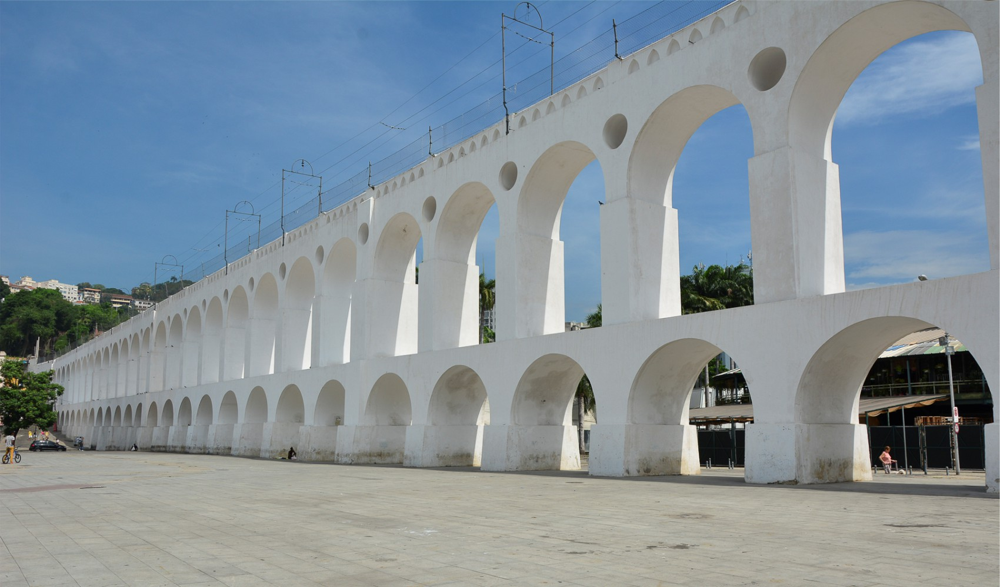
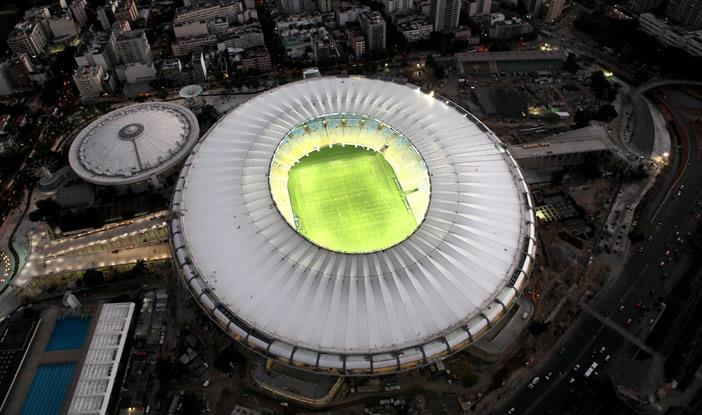
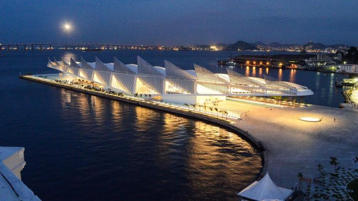

Conheça os melhores pontos turísticos da cidade maravilhosa!
Cristo Redentor

Arcos da Lapa

Maracanã

Museu do Amanhã
Pão de açucar
Parque Lage
Cristo Redentor é uma estátua art déco que retrata Jesus Cristo,
localizada no topo do morro do Corcovado, a 709 metros acima do
nível do mar, com vista para parte considerável da cidade
brasileira do Rio de Janeiro.
Estádio Jornalista Mário Filho, mais conhecido como Maracanã, ou
carinhosamente como Maraca, é um estádio de futebol localizado na
Zona Norte da cidade brasileira do Rio de Janeiro.
O Museu do Amanhã é um ambiente de ideias, explorações e perguntas
que convida o público a refletir sobre como queremos viver - com o
planeta e entre nós.